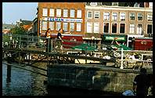
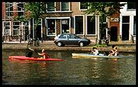

From the micro-blog…
Surface Detail, Iain M Banks
Excellent high-brow science fiction, but unsatisfyingly few good bits and too many biological characters.
The Technician, Neal Asher
See previous Asher review.
Orbus, Neal Asher
See previous Asher review.
Rocannon's World, Ursula LeGuin
Classic LeGuin but somehow less powerful and with less pace or depth than The Left Hand of Darkness.
Bring the Jubilee, Ward Moore
Well-written tale of US Civil War alternative history, but barely any sci-fi and not very alternative.
Far from the Madding Crowd, Thomas Hardy
Overly contrived and long-winded rural drama with pretty scenes, philosophical narration and awkward plot.
Line War, Neal Asher
Cormac stars in yet more OTT space-battle action sci-fi. Looking forward to another equally substantial volume.
A Moment of War, Laurie Lee
Brief yet touching account of ill-prepared foray into an ideological Spanish civil war. Worth the read.
Tinker Tailor Soldier Spy, Le Carré
Dark moody thriller pits odd hero against old establishment. Justly acclaimed, but often slow.
The Man from Beijing, Henning Mankell
Slow-paced thoughtful crime mystery, rather than thriller, but simplistic writing/translation.
The Left Hand of Darkness, Ursula LeGuin
Must-read brilliant well-written sci-fi; more social than science. Visionary all the same.
A War of Gifts, Orson Scott Card
Disappointingly short Ender sequel, a chapter or two with a new character but no plot; still good.
Ender in Exile, Orson Scott Card
Very much the sequel; too busy filling in gaps to have any depth of its own. Good but disappointing.
The Looking Glass War, Le Carré
Sad and sombre thriller, even by Le Carré standards; Our Man In Havana, but without the glamour.
Prador Moon, Neal Asher
Satisfyingly violent space-battle sci-fi with nasty aliens. Disappointingly short, but there's plenty more.
The Back of the Napkin, Dan Roam
Well-executed business-oriented approach to visual thinking. Ironically, should show more/tell less.
Cowl, Neal Asher
Warring factions in sci-fi time-travel thriller. Clever, but slow and lacks the gripping flair of his other books.
The Fifth Head of Cerberus, Gene Wolf
Tedious obfuscated anthropological fantasy that stops rather than ends. Like Cloud Atlas: poor.
Holding the Zero, Gerald Seymour
Amateur sniper’s unlikely involvement in Iraq war, and its many characters. Complex and gripping.
Space Family Stone, Robert Heinlein
Short, sweet old-school sci-fi light family adventure drama, with plenty of detail. Good.
Veronika Decides to Die, Paulo Coelho
The human condition in the mirror of insanity, & an insufficiently unexpected twist. Good read.
The Journeyman Tailor, Gerald Seymour
Dense tense spy thriller is a worthy modern successor to Le Carré’s early work. Recommended.
Insurrection, Weber & White
Military fiction with the sci-fi upgrade to space battles across star systems. Entertaining but shallow.
The Spy Who Came In From The Cold, Le Carré
Classic thriller: they don't make 'em like this any more; 'shame only films get remakes.
Transition, Iain Banks
Complex sci-fi spanning parallel universes; disorienting but compelling. Hoping for many sequels to explore.
Never Let Me Go, Kazuo Ishiguro
Misappropriated youths in bizarre coming-of-age mystery: beautiful but sinister tragedy. Must-read.
A Most Wanted Man, le Carré
Spy thriller stars rich characters but lacks actual espionage, disappoints. Would't even be a good film.
Unto Leviathan, Richard Paul Russo
Forgettable far-future sci-fi about a population living on a star ship. Doesn't go anywhere.
A Murder of Quality, John Le Carré
Spy goes detective in masterful class-based village character study, with posh school and murder.
In Death Ground, Steve White
Relentless space battles and all-round naval genius; broad scope and vision but lacks detail or variety.
Pegasus in Flight, Anne McCaffrey
ESP alternative sci-fi: poses imaginative situations and well-written. Worth reading the series.
Screen Shot, JC Darrin
Worthy tech thriller first novel, with complex characters. Deserves a richer Gibson-style plot. Recommended.
Dark Space, Marianne de Pierres
Passable sci-fi with intrigues, action & heroines, but plot is unresolved in book 1. Nothing special.
The Memory Keeper's Daughter, Kim Edwards
Visually descriptive weave of contrasting characters' lives and perspectives. Good read.
Gravity Dreams, L E Modesitt Jr
Imaginative sociopolitical far-future sci-fi with slow start and erratic plot. Not bad in the end.
The Other Hand, Chris Cleave
Touching tale about UK immigration from the perspective of two troubled women. Worth a quick read.
Worldwar: Upsetting the Balance, Harry Turtledove
WW2 alternate history with alien invasion makes for grand sci-fi drama. A long slog.
In Your Dreams, Tom Holt
Great sequel that adds depth to the first book without assuming you remember it all, and funny with it.
Shadow of the Giant, Orson Scott Card
Yet another good sequel, albeit one for which you have to have read the pre-requisites.
The Naked Sun, Isaac Asimov
Classic bare-essentials sci-fi: a grand vision played out by 2D characters in a simplistic plot. Easy reading.
The Jane Austen Book Club, Karen Joy Fowler
Fictionalised life imitates art in this easy-going account of women and their books and men. Good.
First Meetings, Orson Scott Card
Back-story filler novellas: a few more ambrosial drops in the sci-fi series that just keeps going.
Being Geek, Michael Lopp
Insightful & witty storytelling & analysis for programmers; permission for sanity in IT’s corporate HR. Must read.
Blink, Malcolm Gladwell
Easy reading journalistic anecdotes whose big idea is marred by the thin repetitive treatment. Weak sequel.
A Perfect Mess, Abrahamson, Freedman
Disorder apologists spoil their case and anecdotes with woolly unscientific thinking.
The Portable Door, Tom Holt
Present-day London office-romance meets goblins 'n' magic fantasy with inevitable and well-done comedy.
Shadow Puppets, Orson Scott Card
Again increases the series' interpersonal/political complexity, but is less sci-fi. Still excellent.
The Girl Who Kicked The Hornet's Nest, Stieg Larsson
A gripping and detailed sequel: starts slowly, gathers pace in the second half.
Singularity Sky, Charles Stross
Top-rate modern sci-fi: not quite brilliant, but worth-reading for all-round outrageousness and humour.
Spy Sinker, Len Deighton
Classic British old-school thriller: excellent for its genre, but now dated - more historical interest.
A World of Difference, Harry Turtledove.
Predictable and pedestrian old-school sci-fi, with an unremarkable alternative reality.
Shadow of the Hegemon, Orson Scott Card
Good sequel, but this action-adventure lacks previous books' close-quarters tension & detail.
Worlds Apart, Joe Haldeman
Easy-going comfort sci-fi. It turned out that I'd read it before, but it was short/good enough to re-read.
The Atrocity Archives, Charles Stross
Insane computer-geek black humour sci-fi horror spy thriller. So good it's probably bad for me.
The Devil's Alternative, Frederick Forsyth
Political spy thriller: too much politics, little spying, lots of thriller; good but dated
The Skinner, Neal Asher
Action sci-fi with AI war drones & weird hostile aliens on a bizarre planet. Lots of fun; an excellent read.
Addition, Toni Jordan
Aussie woman has counting obsession and first-date sex. Nothing wrong with that; makes a nice (but odd) tale.
A Bag of Surprises, Shinichi Hochi
Cautionary tales for crooks; Japanese short stories that are still elegant gems after translation.
The Girl Who Played With Fire, Stieg Larsson
Good modern thriller, like Gibson's Pattern Recognition: more gripping but less subtle.
Brass Man, Neal Asher
A more sophisticated development of earlier characters makes this an excellent sequel. Recommended.
The Angel's Game, Carlos Ruiz Zafó
Nicely-written and characterised mystery, but with an irritating Lost-style pseudo-plot. YMMV.
Brother Odd, Dean Koontz
Intellectually challenged mystery with thin 1D plot and tedious moralising characters. Avoid.
Anathem, Neal, Stephenson
Beautiful, elegant existence proof that the physical sciences do not have a monopoly on sci-fi.
Zoë's Tale, John Scalzi
High-school drama meets sci-fi actio
Ender's Shadow, Orson Scott Card
More analytical and sophisticated than Ender's Game, though perhaps less exciting for that. Awesome.
Martian Time Slip, Philip K Dick
Not his best or weirdest, but not far off, and ages well for a 1964 novel. http://tinyurl.com/689bpc
The Incredible Shrinking Man, Richard Matheson
A quick-read sci-fi/horror classic for sure, but has aged less well than I Am Legend.
The Arctic Event, James Cobb
Insubstantial Ludlum rip-off in a 2D setting lacks sophistication, but remains moderately entertaining.
Hilldiggers, Neal Asher
More good stuff from my new fave sci-fi author, but less relentlessly exciting than the Cormac ones.
Children of the Mind, Orson Scott Card
Worthy sequel. Would have freaked me out as a teenager, with all those emotions being named.
A Perfect Spy, John le Carré
Painfully slow plot-development and too little actual espionage spoils well-written would-be spy novel.
Xenocide, Orson Scott Card
Good: a worthy sequel but less captivatingly novel on account of continuing SFTD's themes and characters.
Shadow of the Scorpion, Neal Asher
Easy-going Iain M Banks meets Scalzi, with weapons, sex, space-ships and gadgets.
The Brooklyn Follies, Paul Auster
A straightforward but engaging novel with enough depth and characterisation to make a good read.
Speaker for the Dead, by Orson Scott Card
Just stayed up to finish it. Overwhelmed.
Tokyo Cancelled, by Rana Dasgupta
An odd collection of odd short stories that were trying to be too clever and arty for my taste.
Astrotruckers, Mikael Niemi
The most refreshing modern sci-fi since Scalzi, an H2G2 for our times. Let's hope he writes more.
How To Talk About Books You Haven't Read, Pierre Bayard
Pseudo-humorous literary analysis irony: better skimmed than actually read.
Get Smashed!, Sam Delaney
Tales of the crazy men behind the rise of the 60s-80s London ad industry. Madness, but fun and easy to read.
Coders at Work, Peter Seibel
Deep and meaningfuls with famous old-school programmers. A captivating insight into an earlier world.
Facts & Fallacies of Software Engineering, Robert Glass
Required. Perspective for everyone in software development.
Free, Chris Anderson.
Gentle edutainment pop economics. Worth reading but nothing special, as we're already so used to its Big Idea.
The Best Software Writing I, Joel Spolsky et al
Worthy goal well executed: collect random writing because it's good. Must read.
Waarom ik altijd gelijk heb, Eric Rassin
Don't normally read psychology or in Dutch but it's good to know what Eric does.
Crossing the Chasm, Geoffrey A Moore
Risks giving marketing a good name: clear arguments and insight into tech. Might even be right.
The Omnivore's Dilemma, Michael Pollan
Worthwhile reportage/exposé with thoughtful questions about modern food production & cuisine.
How to Be Inimitable, George Mikes
Tedious and mercifully short; perhaps it was funny at the time, published in 1960. Or not.
Immediate Action, Andy McNab
Matter-of-fact style and straightforward prose make for a decent informative read. Worth a shot.
Worlds, Joe Haldeman
The good kind of sci-fi: lots of hard science mixed with people, an elaborate future scenario, & plenty of plot.
The Third Man, Graham Greene
A short thriller for the screen, set in post-war Vienna. Not bad, but ultimately rather unsubstantial.
JPod, Douglas Coupland
Microserfs updated for a new generation of geeks. Recognisable, funny and beautifully evil.
Our Man In Havana, Graham Greene
This 50's spy farce in Cuba is easy entertainment that hasn't aged at all.
Then We Came to the End, Joshua Ferris
Coupland meets Mad Men in this petty office drama. The plot is too little to late; mediocre.
A Long Way Down, Nick Hornby
No masterpiece, but quirky and darkly funny enough to make a refreshing change from most novels.
The Kalahari Typing School for Men, The Full Cupboard of Life, Alexander McCall Smith
More of same; novelty wearing off. 1/year is likely better than 1/day.
Morality For Beautiful Girls, Alexander McCall Smith, 3rd in this series, is like getting into Act 2
Harder to put down than the 1st books; finished quickly.
The No. 1 Ladies' Detective Agency, Alexander McCall Smith
A short, easy read; touching episodes of distilled human interest. Good.
The Long Habit of Living, Joe Haldeman
Good action sci-fi with near-future space ships, leading to the Worlds series - to read next.
Timescape, Gregory Benford
Classic sci-fi but ultimately takes too long to get anywhere; plot lines in two eras makes it worse
The Black Swan, Nassim Nicholas Taleb
A pseudo-random walk through economics and risk in the style of Hofstadter and Pirsig.
Everything is Miscellaneous
Not bad, but less coherent and interesting than 'Small Pieces Loosely Joined'
see also: How to choose computer books
Small Pieces Loosely Joined: A Unified Theory of the Web, David Weinberger, 2002
If you're on the web a lot do you ever think about where you actually are?
In this book Weinberger explains how we should think about the web, with a steady pace of entertaining anecdotes, contemporary references and philosophical argument that ultimately tells us that we all love the web so much because it 'is a return to the values that have been with us from the beginning'. We love it because we can be more human without the constraints of the real world - inconveniences such as distance and time. Weinberger's metaphors are funnier, though, as with 'when you get off the trampoline, the ground doesn't feel bouncy enough'.
Take this book seriously, but not too much. Weinberger means it and makes good points well, but sometimes seems too self-consciously irreverent and witty. Even though this is amusing and less in-your-face than The Cluetrain Manifesto, it almost sounds like pseudo-intellectualism for geeks. I don't think so - Small Pieces is full of provocative ideas - but then I wouldn't would I?
The C Programming Language, Kerningham & Ritchie, 1988
This, the original and definitive book on C, is a refreshingly slim book,
with no pointless padding. The style is frequently obscure, as is C, and the explanations are brief, so there are probably more accessible books.
The definitive C book, but hard to read and too expensive.
Code Complete, Steve McConnell, 1993
This is an extremely thorough and well-balanced book on software
construction that covers everything well and refers to both commercial experience and academic studies, and includes clearly differentiated prescription and personal opinion.
Every programmer should read this book.
The
Dilbert Principle, Scott Adams, 1996
This classic book teaches office-workers, especially those in IT, that
many of their experiences are common. It debunks many of the mysteries of office life, explaining, for example, that a mission statement is 'a long awkward sentence that demonstrates management's inability to think clearly'.
Essential humour for all office-bound techies.
The Dilbert Future, Scott Adams, 1997
This surprisingly good follow-up to The Dilbert Principle analyses
the politics of entirely new ground: the future. Noticeably more 'ha ha only serious' than the first book, this is just as funny.
Worth a read if you enjoyed the first book.

Intranet Document Management, Joan Bannan, 1997
This book is much less focused than its title suggests; it only gives a
shallow overview of many aspects of intranet publishing, including such details as what you can and cannot do with HTML. Worse: despite the small size, there is plenty of blatant padding. This book might be good for Dilbert's boss, but
most people should only give this book give minutes' browsing in the bookshop.
Macintosh Human Interface Guidelines, Apple Computer, 1992
This is the best of the operating system user-interface guidelines books,
because the writing and presentation is so clear and elegant. This is a book about the big principles, so sometimes there is less detail than in other books. These guidelines are widely applicable as the Mac OS interface has been widely copied.
This excellent introduction to practical user-interface design should be on every designer's coffee table.
OSF/Motif Style Guide, Open Software Foundation, 1991
This is a very straightforward user-interface design guide, whose clarity
comes from a dry 'computer manual' style. The explanations are very readable and individual guidelines are clearly marked. Many guidelines apply equally to Windows, which borrowed heavily from Motif, but much of the book is Motif-specific.
Worth a look for its clear exposition of user-interface principles.
The Perl CD Bookshelf, O'Reilly, 1999
This comprehensive Perl documentation resource is excellent value for
money, incorporating all six O'Reilly Perl books on one CD in a well-designed HTML format. This is a much better reference than the books: firstly the combined index and search facility integrates the books extremely well, and secondly the different books allow the reader to switch levels of detail by looking up the same topic in Learning Perl, Programming Perl and Advanced Perl Programming.
An unsurpassed language reference and development resource for Perl.

Programming Perl, L. Wall, Randal Schwartz, Stephen Potter, 1996
The
Camel book is justly famous: this, the definitive Perl reference,
is both excellently written and extremely useful for the practicing Perl programmer. It serves well as a fairly steep introduction to the language, a language reference and a discussion of many of Perl's language features.
No Perl programmer should be without this book.
Tog On Interface, Bruce Tognazzini, 1992
The Windows Interface Guidelines for Software Design, Microsoft Press, 1995
This very practical book on user-interface design follows on well from
the Macintosh Human Interface Guidelines; although the look and feel of the book isn't as nice, the content is much more satisfying and informative. This is also much more of a fun book to read.
Anyone who is into GUI design would find this a good read.
These are the definitive user-interface guidelines for Windows. The
content is good and there is lots of useful discussion, but is hard to use as a reference because it shies away from prescription such that individual guidelines get lost in the prose. In theory this book is essential for all Windows software developers, but since Microsoft itself ignores these guidelines they are not as relevant as they might be.
{kind=link}
{kind=link}
{kind=link}